First, we present a general approach to the design of stabilizing switched controllers for systems (1) which are based on the basic controllers (2). It turns out that if we always can choose a basic controller such that a positive definite function decreases along trajectories then the system can be stabilized by switching basic controllers.
To be able to formulate the problem of stabilizing a system by switching basic controllers in a way suitable for quantifier elimination, we will use the following theorem. In the sequel we let
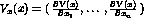
denote the gradient of V w.r.t. x.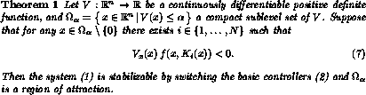
ProofIntroduce the sets
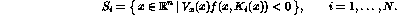
Since
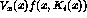
is continuous, these sets are open. Let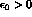
and consider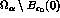
. According to the assumptions, any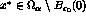
belongs to some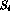
. Since is open, there is an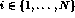
and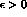
such that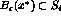
. The collection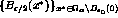
forms an open cover of . Since is compact, there exists a finite subcover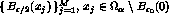
. The collection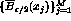
is also a cover. Now, in each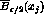
we have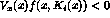
for at least one of the functions, which also attains its maximum in this set. Hence
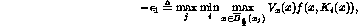
where
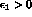
. We conclude that for any there exists such that for any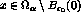
there is an such that
Let
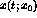
denote a solution starting at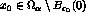
at time 0 of the system (1) controlled by switching basic controllers such that (7) is satisfied. Furthermore, let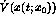
denote the time derivative of V(x) along a solution. According to (8) we have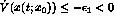
for all points on the trajectory in . Integrating this inequality from 0 to t givesThis shows that can only stay in for a finite time, since V is bounded from below. Since
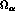
is invariant (V is decreasing along solutions) the trajectory has to enter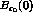
. Hence,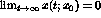
since was arbitrary, i.e., the origin is attractive.To prove stability we observe that
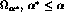
is invariant. Moreover, there exists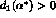
and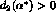
such that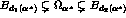
, since V is positive definite, see for example [8].We conclude that the origin is an asymptotically stable solution and is a region of attraction of the system (1). The assumptions in the theorem implies that the domains of definition of the control laws cover , i.e.,
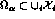
.Notice that each of the basic controllers may yield an unstable closed loop system but there may still exist a switched stabilizing strategy. The following corollary follows easily from the proof of Theorem 1 since all sublevel sets of a function, which is radially unbounded, are compact.
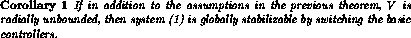
If the assumptions in Theorem 1 or Corollary 1 are satisfied then the following controller can be used to stabilize the system
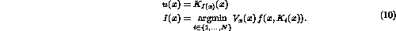
With this choice we get
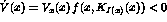
for all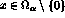
. Observe that the switching function I might be multiple valued since the minimum in (10) might be obtained by several controllers simultaneously. This is the case along switching surfaces. For states corresponding to multiple values the behavior of the controller has to be further specified. Either techniques from sliding mode control [16] can be used or a slight variation of controller (10) where hysteresis is introduced. Due to the fact that the sets (introduced in the proof of Theorem 1) are open, the switching surfaces of controller (10) can be substituted by hysteresis zones. This will prevent sliding modes but chattering solutions may appear instead depending on the direction of the vector fields along the switching surface, see Example 3.The conditions in Theorem 1 and Corollary 1 can be checked by quantifier elimination if the functions that appear in the theorems can be described by semialgebraic sets. This means that we are able to handle feedback control laws which are implicitly defined as solutions to multivariate polynomial equations. In connection to stabilization of the zero dynamics of a nonlinear system, which is not affine in the control, this turns out to be very useful, see Section 4.
The decision problem that has to be solved to verify the conditions of Theorem 1 is
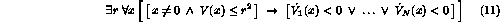
and for Corollary 1 we get
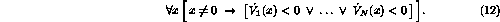
If
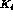
is an algebraic function of x, i.e., if the relation between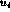
and x is a polynomial equation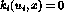
and is one of the roots, the above formulas have to be modified. We have to quantify u and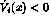
is changed to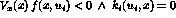
, see Example 4.Furthermore, given a family of parameterized positive definite functions
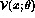
we can use quantifier elimination to determine if there exists a function in this family such that it satisfies the conditions in Theorem 1 or Corollary 1. For instance, in order to check global stabilizability using the family of quadratic positive definite functions,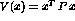
, we consider the following decision problem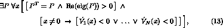
where P is a matrix variable and
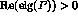
denotes a set of inequalities which guarantee that P is positive definite, e.g., the positiveness of the principal diagonal minors of P.This procedure is much more general than when we just use one fixed function V(x). The main drawback of this approach is the large number of variables in the formula. The number of variables is equal to the sum of the number of states, n, and the number of parameters we need to describe V(x). In the quadratic case we get n+n(n+1)/2-1 variables.
To reduce the required computations, we can search for a quadratic Lyapunov function for the linearized switched dynamics and then use this in the decision problem (11). The following results from [11, 14] are then useful.
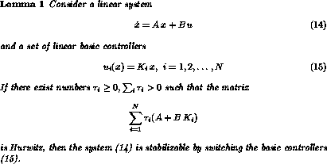
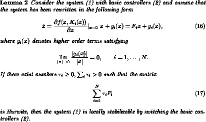
ProofSee [11]. The results above and in particular the linearization result of Lemma 2 can be used to considerably reduce the required computations of the stabilizability test. Indeed, in order to test stabilizability it is easier if one uses linearizations but the design of a stabilizing controller and the estimation of the domain of attraction can be done directly by using quantifier elimination. We propose the following procedure:
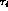
are denoted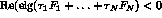
. Check whether the following decision problem is TRUENote that the problem can be normalized by fixing one of the to 1, which reduces the number of variables.
which is symmetric and positive definite. Fix the matrix Q and compute P.
Performing quantifier elimination gives an estimate of the domain of attraction, since the resulting constraints on r correspond to invariant ellipsoids such that all trajectories starting in such an ellipsoid converge to the origin.
Consider the two nonlinear systems where
The linearization matrices are
which both are unstable. However, is Hurwitz and we can switch between the two systems to stabilize the system locally according to Lemma 2. It is easy to see that P=I solves the Lyapunov equation (19). To estimate the domain of attraction we utilize formula (20) and get 0 < r < 1.0552. Hence, within a circle of radius at least 1.055 we can control the state to the origin.
Lemma 2 may only be used in situations when the linearizations of the continuous dynamics contain enough structure. However, these conditions are not satisfied in general and quantifier elimination is the only tool, which we are aware of, that can handle these cases.
Lemma 2 cannot be used for the system where
since the linearizations do not contain enough information about the system behavior near the origin. We have to use Theorem 1 or Corollary 1 directly instead. We try with the Lyapunov candidate function . Performing quantifier elimination in formula (12) gives TRUE, which shows that the system is globally stabilizable by switching basic controllers.
In Figure 1 we illustrate the regions where and . The union of the gray-shaded regions covers the whole state space.
Figure 2: The regions (gray) where (left) and
(right).
The curve can be shown to lie in the interior of the overlap of the regions in Figure 1 and can hence be used to switch between the systems to obtain global asymptotical stability.